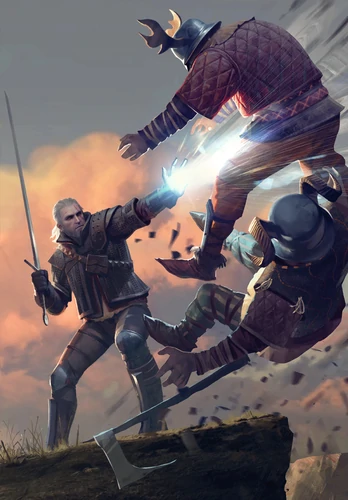

Название |
Информация |
Фотография |
Доп. способность |
Аард |
Знак Аард (ориг. Aard, со Старшей речи ard — верх, верхний, высочайший) — ведьмачий знак,
простейшая магия, основанная на элементе воздуха. |
 |
Заморозка |
Игни |
Игни (ориг. Znak Igni) — ведьмачий знак, простейшая магия, основанная на элементе огня. |
|
Поджег |
Квен |
Знак Квен (ориг. Znak Quen) — ведьмачий знак, простейшая магия, доступная ведьмакам. Основан на элементе земли. |
|
Активный щит |
Ирден |
Знак Ирден (ориг. Znak Yrden) — ведьмачий знак, простейшая магия, доступная ведьмакам. Основан на пятом элементе, сути магии. |
|
Замедление |
Аксий |
Знак Аксий (ориг. Axii sign) — ведьмачий знак, простейшая магия, доступная ведьмакам. Основан на элементе воды. |
|
Контроль сознания |